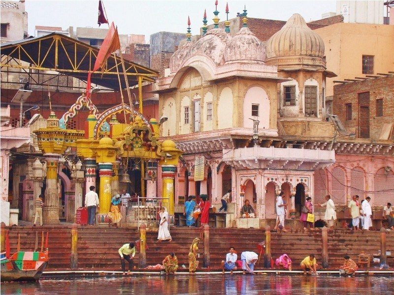
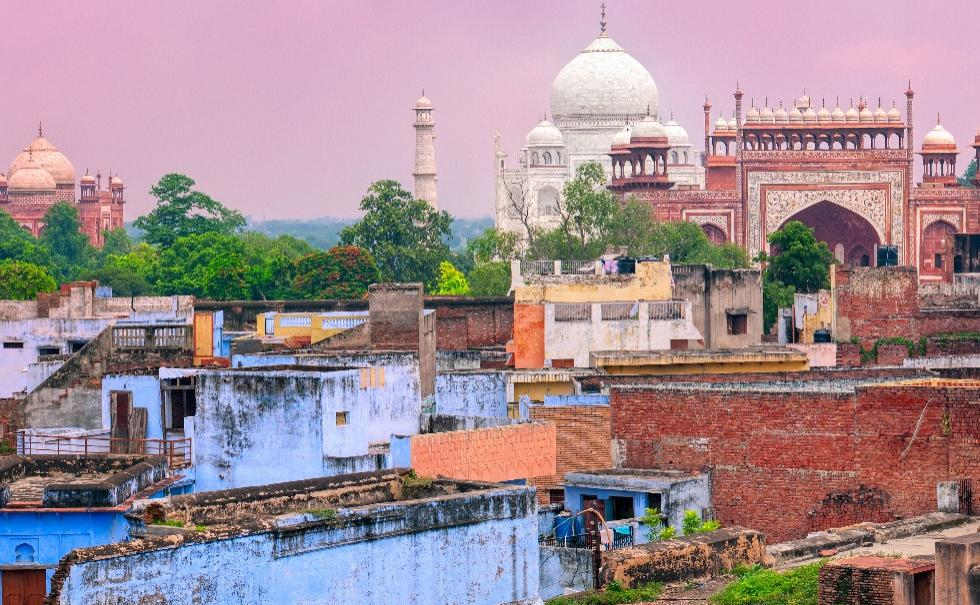
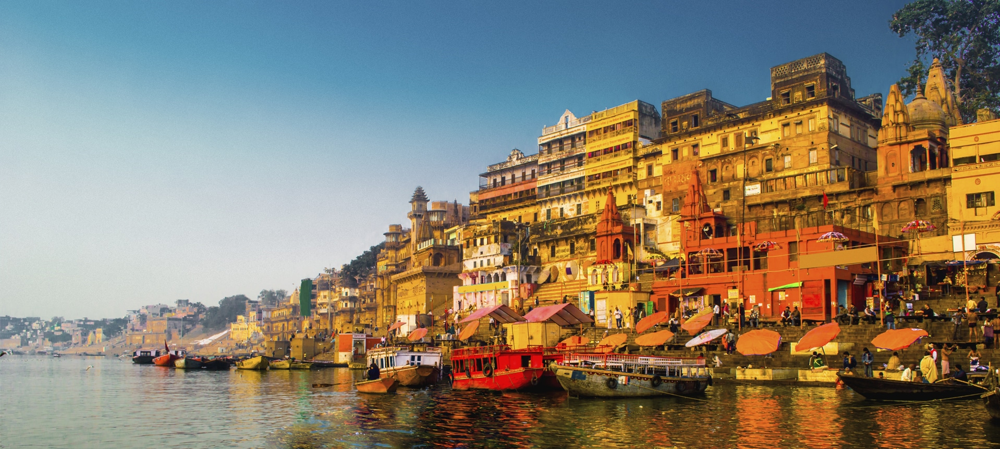

Welcome to Uttar Pradesh,Uttar Pradesh abbreviated, as UP, is the most populous state in the Republic of India as well as the most populous country subdivision in the world. The densely populated state, located in the northern region of the Indian subcontinent, has over 200 million inhabitants. It was created on 1 April 1937 as the United Provinces during British rule, and was renamed Uttar Pradesh in 1950. Lucknow is the capital city of Uttar Pradesh. The main ethnic group is the Hindi people, forming the demographic plurality. On 9 November 2000, a new state, Uttarakhand, was carved out from the Himalayan hill region of Uttar Pradesh.
Tours to Mathura
Mathura is a city in the North Indian state of Uttar Pradesh. It is located approximately 50 kilometres (31 mi) north of Agra, and 145 kilometres (90 mi) southeast of Delhi; about 11 kilometres (6.8 mi) from the town of Vrindavan, and 22 kilometres (14 mi) from Govardhan. It is the administrative centre of Mathura district of Uttar Pradesh. In ancient times, Mathura was an economic hub, located at the junction of important caravan routes. The 2011 Census of India estimated the population of Mathura to be 441,894. In Hinduism, Mathura is believed to be the birthplace of Krishna, which is located at the centre of the Shri Krishna Janmabhoomi. It is one of the Sapta Puri, the seven cities considered holy by Hindus. The Kesava Deo Temple was built in ancient times on the site of Krishna's birthplace (an underground prison). Mathura was the capital of the kingdom of Surasena, ruled by Kamsa, the maternal uncle of Krishna. Mathura has been chosen as one of the heritage cities for Heritage City Development and Augmentation Yojana scheme of Government of India.
Tours to Agra
Agra is a city on the banks of the river Yamuna in the northern state of Uttar Pradesh, India. It is 378 kilometres (235 mi) west of the state capital, Lucknow, 206 kilometres (128 mi) south of the national capital New Delhi and 125 kilometres (78 mi) north of Gwalior. Agra is one of the most populous cities in Uttar Pradesh, and the 24th most populous in India. Agra is a major tourist destination because of its many Mughal-era buildings, most notably the Tāj Mahal, Agra Fort and Fatehpūr Sikrī, all three of which are UNESCO World Heritage Sites.Agra is included on the Golden Triangle tourist circuit, along with Delhi and Jaipur; and the Uttar Pradesh Heritage Arc, tourist circuit of UP state, along Lucknow the capital of the state and Varanasi. Agra falls within the Braj cultural region.
Tours to Varanasi
Varanasi also known as Benares, Banaras or Kashi is a city on the banks of the Ganges in the Uttar Pradesh state of North India, 320 kilometres (200 mi) south-east of the state capital, Lucknow, and 121 kilometres (75 mi) east of Allahabad. A major religious hub in India, it is the holiest of the seven sacred cities in Hinduism and Jainism, and played an important role in the development of Buddhism. Varanasi lies along National Highway 2, which connects it to Kolkata, Varanasi, Agra, and Delhi, and is served by Varanasi Junction railway station and Lal Bahadur Shastri International Airport. Varanasi is also one of 72 districts in the Indian state of Uttar Pradesh. At the time of the 2011 census, there were a total of 8 blocks and 1329 villages in this district.